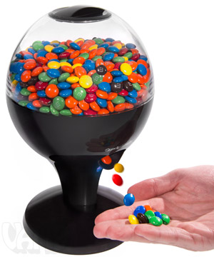

<!--
  Generated template for the ResultPage page.

  See http://ionicframework.com/docs/components/#navigation for more info on
  Ionic pages and navigation.
-->

<ion-content padding >
  <ion-grid style="height: 100%;">
    <ion-row justify-content-center align-items-center style="height: 100%">
      <div *ngIf="correctResult">
        <div style="width: 25%; float: left; margin-right: 10px;">
            
            <br><br>
        </div>
        <div style="width: 70%; float: right;">
            <h3>Correct!</h3>
            <hr>
            <p style="font-weight: 500; font-size: 16px; margin-top: 0px;">⚠️ Place hand under dispenser before pressing 'Dispense' button
            </p>
        </div>
          <br>
          <hr>
          <br>
          <button ion-button block large (click)="dispenseCandy()">
            Dispense Candy
          </button>
      </div>


      <div *ngIf="!correctResult" text-center>
        <h3>Incorrect! <br>The answer was <b [innerHTML]="answer"></b> - try again later!</h3>
        <p><i>You can try a new question every 15 seconds</i></p>
        <!-- <button ion-button block large (click)="goHome()">
            Exit
          </button> -->
        <!-- <button ion-button block large (click)="tryAgain()">
              Try Again
            </button> -->
      </div>

      <button ion-button (click)="goHome()" block clear>
        Exit to home
      </button>
    </ion-row>

  </ion-grid>

</ion-content>
